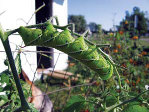
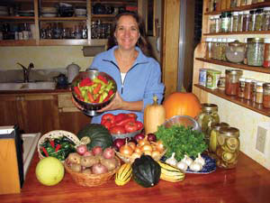
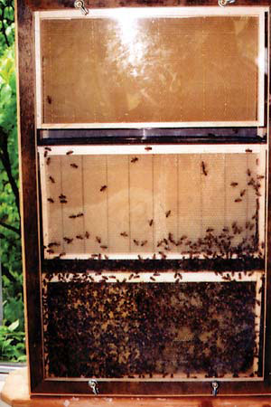

Our Dogs Hunt Tomato Hornworms
Trellis Creates Garden Space
Chickens Feast on Japanese Beetles
Bees Increase Fruit Yield
Delicious Hot Peppers
Easy Tomato Watering
One day last July, my sister was looking closely at our tomato plants and noticed a great deal of damage due to the large, green larvae of the tomato hornworm moth, which lays its eggs during the wee hours of the night. My sister started searching for the hornworms and picked off at least 15.
Our dogs, Heidi, a yellow lab, and Zorro, a German shepherd, became very interested in what my sister was doing, so she offered a worm to each dog. Heidi and Zorro are always hungry, so why not? As unappetizing as it sounds, the dogs gobbled them up. The scent of the hornworms was with them, so the dogs began nosing around in the plants to find the tasty morsels.
Since then, we have seen the dogs in the tomato patch searching for hornworms on their own initiative. They grab the larvae right off the plants and eat them!
Any time we are in the garden, Heidi and Zorro accompany us and locate hornworms much faster than we can. Who would have guessed? This “organic” form of pest control is one that anyone with a dog can try!
I recently began my own small backyard market garden. Pressed for space, I needed a way to gain more area to produce the vegetables I plan to sell at local farmer’s markets.
I began using a trellis system, which is great for many kinds of vegetables. Pole beans, of course, work on a trellis, but have you tried cucumbers? On a trellis, cucumbers grow long and straight and leave a lot more ground for other plantings. A strong trellis also can be used for some small melon varieties. The melons will maintain their naturally round shape, and keeping them off the ground discourages rot and keeps some critters at bay. Heavy tomato vines also can be trained to grow along a trellis.
Place your trellises in garden areas where they will receive ample sunlight, but not where the trellises will shade your other plants. I put mine on the south side of the garden, giving all my plants dawn-to-dusk sunlight.
To make a trellis, a heavy gauge of fencing material works best. My trellises are just over 6 feet high, with the bottom of the fencing attached 1 foot up the fence stake.
We once lived in an area that had a tremendous number of Japanese beetles in the summertime. In order to save our raspberry and rose bushes from total destruction, I bought a “bag-a-bug” pheromone trap. Within 24 hours, the beetles completely filled the bag.
I realized I would never keep up with emptying the filled bag of bugs, so I moved the trap to the chicken pen and hung it about 6 feet from the ground. I cut off the bottom corner of the bag, fitted the bottom of the bag over a piece of 1 1/2-inch PVC pipe and secured it with duct tape. The bottom of the pipe hung over a kitchen plate. Here’s how it works: The beetles fly into the trap, slide into the bag and down the pipe onto the plate. When they reach the plate, they walk around rather than fly away.
The plate quickly became the main attraction in the chicken pen. The chickens would gather around and eat the beetles as they fell onto the plate; eventually, they started catching the beetles in the air as they flew toward the trap.
The trap provided a significant supplement to the chickens’ diet, and our raspberries and roses thrived.
We have a small farm in south-central Kansas that has a variety of fruit trees. Two years ago, I took a beekeeping class and moved some hives to the farm for pollination and for the honey. The following year, we had an abundance of apples, and their size had nearly doubled!
I also built an observation beehive that hangs on the outside of the sun porch, where in the morning I drink coffee and watch the bees working. My grandchildren like to try to find the queen bee.
Roy has developed a building plan for his observation hive. To receive a copy, e-mail him at kjrrh@cox.net, with “observation hive” in the subject line. Honey-n-Me Bee Farm sells observation-hive kits. Call (770) 833-1235 or visit http://www.honey-n-me.com. - Mother
I remember chopping and mixing vegetables with my mom to make our family recipe for Puerto Rican sofrito (salsa). Every spring, Mom and I would go to a local organic greenhouse to pick out a variety of hot-pepper seedlings. Then we’d turn the resulting fruits into hot sauces to satisfy our capsicum (pepper) cravings. Now that I have my own garden, it is a tradition I continue with my son.
My mom found ‘Aji Dulce’ pepper seedlings at the nursery, and they grew abundant fruits in the first year. But in subsequent years, they hardly grew past our ankles. However, we found that ‘Aji Crystal’ peppers are prolific in our Zone 4 climate. The ‘Aji Crystal’ peppers have more heat than the ‘Aji Dulce’ peppers, but by substituting these equally citrusy and pungently sweet peppers, our “northern sofrito” is a garden-fresh meal worthy of sharing.
Northern Sofrito
Put all the ingredients into a food processor and blend until smooth:
2 bunches cilantro
1 head garlic (peeled cloves)
1 large white onion cut into quarters
4 cups deseeded ‘Aji Crystal’ peppers
1 can tomato paste (6 ounces)
1/4 to 1/2 cup vinegar (to taste)
Dashes of the following spices, to taste:
cumin, granulated garlic, oregano,
paprika, salt and pepper
Basically, sofrito is a seasoning paste that is used in Latin American dishes such as rice and beans. It also can be used in a variety of other dishes or as a marinade for chicken or tofu. A common way to use sofrito is to sauté about 2 tablespoons in olive oil, and then add a large can of crushed tomatoes to make a sauce. The sauce can be used with rice and beans or with tacos and enchiladas. Because only a small amount of sofrito is called for in most dishes, many folks freeze it in small containers for later use.
‘Aji Crystal’ pepper seeds are available from Seed Savers Exchange. To order by phone or to request a catalog, call (563) 382-5990. For more information about hot peppers, read the February/March 2004 article “The Other Chile Peppers.”- Mother
To conserve water and direct it to plants’ roots, find some 2-inch-diameter plastic pipe and cut it into 3-foot lengths. With a narrow blade, cut several half-inch slots along 6 inches of one end of each length of pipe.
For each plant, dig a hole 12 to 18 inches deep. Place the pipe in the hole with the “holey” end at the bottom and the other end above the surface. Add your customary amendments to the dug-out soil and refill the hole to planting depth.
Set your tomato plants deep in the soil above the pipe, gently backfill and mulch. When it’s time to water, simply pour water or manure tea down the pipe, straight to the root zone. This trick works well for tomatoes, and you can adapt it for peppers, eggplant and more.
If you are aware of successful designs or products that produce domestic hot water safely from EPA-certified woodstoves, please send the details to letters@MotherEarthNews.com, or write to “Dear Mother” at Mother Earth News; 1503 SW 42nd St.; Topeka, KS 66609.
Have you learned some trick of the trade, secret formula or way to work more sustainably around the homestead? We’ll pay you $25 to $50 for each letter we publish. Send info, with photos please, to “Country Lore” at Mother Earth News, or to letters@MotherEarthNews.com.
|
 BEVERLY BLACK Dogs can be trained to eat tomato hornworms. |
 JUNE VAN HOUTEN June Van Houten prepares her northern sofrito recipe with delicious hot peppers, such as Aji Dulce and Aji Crystal. |
 ROY HOLDER Keeping bees around your garden can increase fruit yield. |